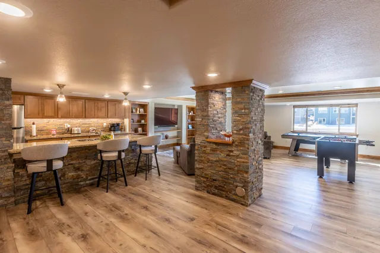
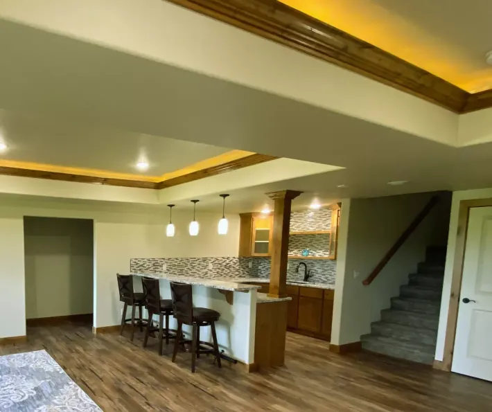
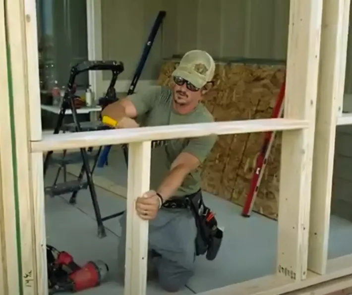
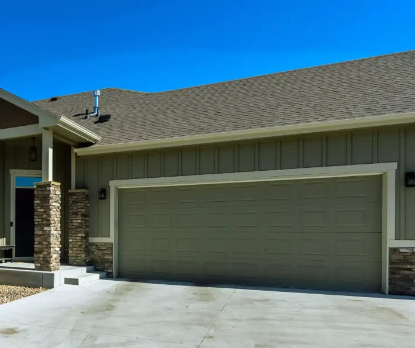

Loveland and Northern Colorado
From an unfinished basement to a room you live in.
Family-owned basement finishing, home additions, and custom building in Northern Colorado.
Reviews
In their words
“Local Map Construction did an outstanding job on our basement finish project. Every little detail we wanted was accounted for. Matt and Joe were very responsive to our needs or to answer our questions.”
Work
Recent projects



About
Local MAP Construction
Local MAP Construction is a family-owned Northern Colorado construction company, run by two owners, Matt and Joe, who are best friends and fathers. The about page says they came together to create well built, custom basements in their community, the same as they built for themselves.
Matt loves the bigger projects and the visionary planning portion of each project. He is a husband and father of 4. Joe is a husband and girl dad with a woodworking shop where he crafts cutting boards in his spare time.
The team of licensed contractors in Northern Colorado stays focused on the small details, craftsmanship, and quality. They describe watching a project start as an unfinished basement with concrete floors and a few egress windows, then become finished living space a family can actually use.
Services
How we can help
Home Additions
Custom Home Building
Garage Construction
Solar Panels
Custom Cutting Boards
Service area
Where we work
- Loveland, CO
- Fort Collins, CO
- Greeley, CO
- Berthoud, CO
- Longmont, CO
- Windsor, CO
- Evans, CO
- Timnath, CO
- Mead, CO
- Johnstown, CO
Contact